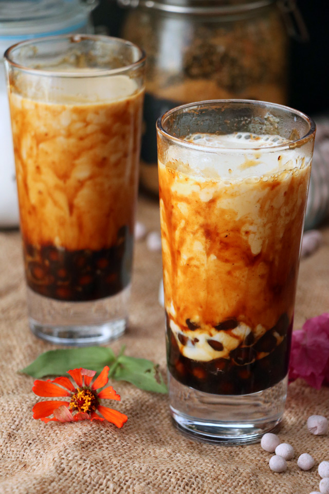

Boba tea, also known as bubble tea, is a popular Taiwanese beverage that combines tea, milk, sweetener, and chewy tapioca pearls, often referred to as "boba". The drink typically starts with a base of black, green, or oolong tea, which is then mixed with milk or a non-dairy alternative and sweetened to taste. The signature tapioca pearls are small, chewy balls made from tapioca starch, giving the drink its unique texture.
Boba tea is usually served cold, with ice, and comes in a variety of flavors, ranging from classic milk tea to fruity options like mango or strawberry. It's often topped with a wide straw, allowing the drinker to sip up the boba pearls along with the tea. Variations can include additional toppings like fruit jelly, popping boba filled with juice, or even a layer of frothy cheese foam.
This drink has gained worldwide popularity for its refreshing taste, playful texture, and the customizable options that allow each cup to be uniquely tailored to the drinker’s preferences.
This is what do you need to make a bubble tea at home.
Substitute 4 tea bags for the loose-leaf tea if preferred. Use any kind of black or green tea you like! I did not use quick-cooking tapioca pearls. If you buy that variety, either online or from an Asian market, follow the cooking instructions on the package. Boba are best if used within a few hours of cooking, but will keep refrigerated for a few days. They will gradually harden over time.
Bring 2 cups water to a boil in a small saucepan. Add tapioca pearls and stir gently until they begin floating to the top. Reduce heat to medium and simmer until softened and dark, about 25 minutes. Remove from heat, cover, and let sit for 15 minutes.
Meanwhile, bring 2 cups water to a boil. Remove from heat and add tea leaves. Let steep for 15 minutes. Strain out tea leaves and refrigerate tea.
Drain pearls. Bring 1/4 cup water to a boil in the empty saucepan. Stir in brown sugar until dissolved. Immerse pearls in syrup and let sit until room temperature, about 15 minutes.
Divide pearls and desired amount of syrup between 2 tall glasses. Pour in tea.
Add ice, milk, and sweetened condensed milk to both glasses. Stir before drinking.
Now our bubble tea is ready.
